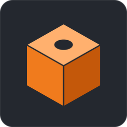
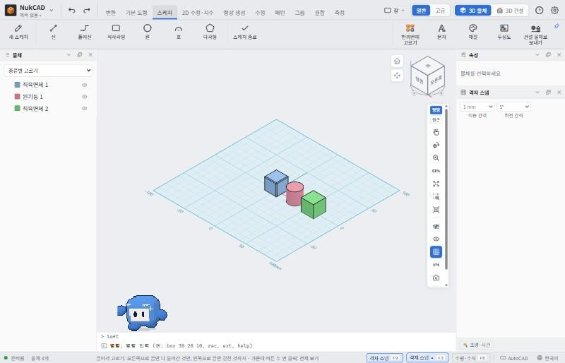

STUDENT 3D CAD

NukCAD
학생용 3D 물체·건설 모델링 프로그램
3D 프린트할 작은 물건부터 지도 위 건물까지, 쉬운 메뉴로 만들어 보세요.
설치가 차단될 때
설치 파일에 코드 서명이 없어 Windows가 경고합니다. 악성 코드가 발견된 것은 아니며, 서명 없는 새 파일에 나타나는 기본 보호 기능입니다.
파란 창 "Windows의 PC 보호"
추가 정보를 누른 뒤 실행을 누르세요.
Windows의 PC 보호
Microsoft Defender SmartScreen에서 인식할 수 없는 앱의 시작을 차단했습니다. 이 앱을 실행하면 PC가 위험에 노출될 수 있습니다.
추가 정보1
실행 안 함
Windows의 PC 보호
Microsoft Defender SmartScreen에서 인식할 수 없는 앱의 시작을 차단했습니다. 이 앱을 실행하면 PC가 위험에 노출될 수 있습니다.
실행2실행 안 함
"스마트 앱 컨트롤이 이 앱을 차단했습니다"
파일마다 허용할 수 없습니다. 설치하려면 기능을 꺼야 합니다.
스마트 앱 컨트롤
켬
평가
끔
- 설정 → 개인 정보 및 보안 → Windows 보안을 엽니다.
- 앱 및 브라우저 컨트롤 → 스마트 앱 컨트롤 설정에서 끔을 고릅니다.
- 설치 파일을 다시 실행합니다.
참고: 최신 Windows 11에서는 나중에 같은 곳에서 다시 켤 수 있지만, 다시 켜면 NukCAD도 실행이 막힙니다. 끄고 싶지 않으면 위 바로 사용으로 설치 없이 웹판을 쓰세요.
간단한 사용법


- 처음 화면에서 3D 물체 모델링(작은 물건) 또는 3D 건설 모델링(지도 위 건물)을 골라요.
- 위 메뉴의 기본 도형·스케치 단추를 누르고 3D 화면을 클릭해 만들어요. 명령 창에
box 30 20 10처럼 쳐도 돼요. - 마우스: 왼쪽 클릭 고르기 · 가운데 끌기 화면 이동 · 오른쪽 끌기 회전 · 휠 확대·축소
- Ctrl+S 저장, Ctrl+Z 되돌리기. 3D 프린트는 왼쪽 위 NukCAD 단추 → 3D 내보내기 → STL.
- 잘 모르는 것이 있으면 아래쪽 명령 창 위의 도우미 Cadoo를 두 번 클릭해 물어보세요.
웹판과 설치판
웹판 — 설치 없이 바로 써요. 학교 PC나 다른 컴퓨터에서 빠르게 시작할 때 좋아요.
설치판 — 더 큰 AI 도우미 모델과 멘토에게 도움 요청 같은 수업 기능을 쓸 수 있어요.